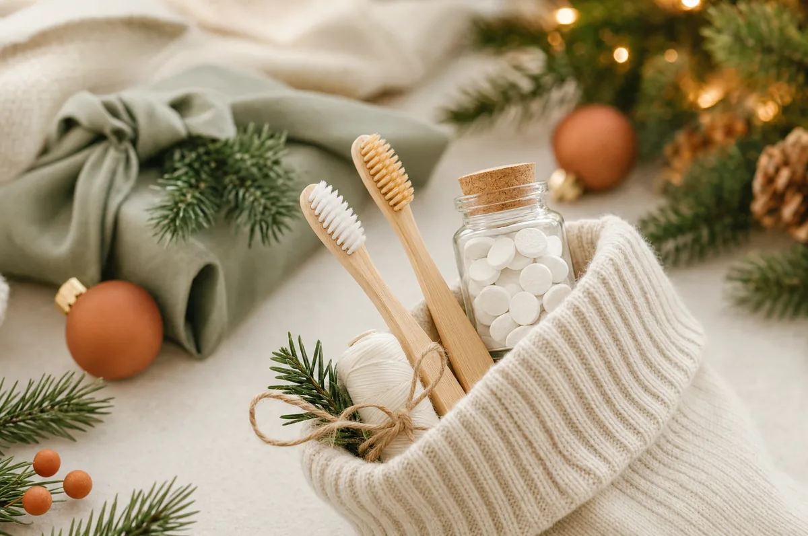

Blog / Article
Green Smiles for the Holidays: Eco-Friendly Dental Stocking Stuffers That Make a Difference

This December, why not stuff stockings with gifts that promote both oral health and environmental wellness? As awareness grows about the environmental impact of traditional dental products, thoughtful gift-givers in Alexandria are discovering that sustainable oral care makes perfect sense for holiday giving.
Traditional dental products contribute significantly to plastic waste, with over one billion toothbrushes ending up in U.S. landfills annually. Each plastic toothbrush can take hundreds of years to decompose, while conventional floss containers and toothpaste tubes add millions more pieces of non-biodegradable waste to our planet every year.
The good news? Eco-friendly dental products have evolved dramatically, offering excellent performance while supporting environmental stewardship. These thoughtful alternatives make meaningful stocking stuffers that show care for both your loved ones' smiles and the world they'll inherit.
Bamboo Toothbrushes That Actually Work
Bamboo toothbrushes represent the easiest and most impactful swap in sustainable oral care. Unlike plastic alternatives that persist in landfills for centuries, bamboo handles biodegrade under proper composting conditions.
High-quality options feature ergonomic designs and bristles made from castor bean oil or other plant-based materials. Popular brands include The Humble Co., Brush with Bamboo, and various artisanal producers that craft beautiful handles for different family members.
Dr. Hye Park, with her focus on biological dentistry at Green Dentistry, notes that bamboo toothbrushes can clean just as effectively as plastic versions when used with proper technique. Her commitment to eco-conscious dental care makes her especially knowledgeable about sustainable alternatives that don't compromise oral health.
Toothpaste Tablets
Toothpaste tablets eliminate plastic tubes entirely while providing cleaning power in convenient, travel-friendly formats. These chewable tablets dissolve with saliva to create foaming action comparable to traditional paste, often with thoughtful ingredient profiles.
Leading brands like Bite, Denttabs, and Huppy offer tablets in refillable glass jars or compostable paper pouches. Many formulations include nano-hydroxyapatite, a natural mineral that helps support enamel, making them appealing to health-conscious Alexandria families seeking gentler alternatives.
For families interested in natural approaches to oral health, Dr. Park's focus on integrative biological dentistry helps patients understand how these alternative formulations can fit into an overall wellness routine while maintaining good cleaning results.
Sustainable Floss Options
Traditional dental floss creates substantial environmental waste through plastic containers and non-biodegradable nylon threads. Sustainable alternatives address these concerns while providing good cleaning performance.
- Silk Floss: a premium option, offering strength and smooth gliding action between teeth with refillable glass or stainless steel containers.
- Plant-Based Floss: uses corn fiber, bamboo fiber, or other sustainable materials that come in recyclable packaging and break down naturally.
- Biodegradable Floss Picks: made from wheat straw, these provide on-the-go oral care with less plastic waste in refillable containers.
Zero-Waste Mouthwash Solutions
Traditional mouthwash bottles contribute to bathroom plastic waste, but innovative alternatives provide effective oral care in sustainable formats. Mouthwash tablets offer concentrated formulations that dissolve in water to create fresh, effective rinses.
Brands like Georganics create tablets with natural ingredients like essential oils, sea salt, and herbal extracts. These tablets come in recyclable glass jars, eliminating plastic bottles entirely while often providing more affordable per-use costs.
Dr. Park's holistic approach to dental health aligns well with these natural mouthwash alternatives, as they support oral wellness while avoiding certain synthetic ingredients.
Eco-Friendly Accessories
Sustainable oral care extends beyond basic brushing and flossing.
- Copper Tongue Scrapers: provide antimicrobial cleaning action that lasts for years, eliminating plastic alternatives.
- Stainless Steel Scrapers: offer similar longevity while providing smooth, comfortable cleaning action.
- Interdental Brushes: made from sustainable materials with refillable handles and replaceable brush heads.
Travel-Ready Sustainability
Holiday travel often disrupts oral care routines and generates significant waste through disposable products. Sustainable travel kits address these challenges while making practical stocking stuffers for Alexandria's frequent travelers.
- Collapsible Bamboo Toothbrushes: fold for compact storage while maintaining full-size functionality.
- Toothpaste Tablets: eliminate liquid restrictions while providing cleaning power in minimal space.
- Portable Floss Options: include refillable silk floss in compact metal dispensers or biodegradable floss picks in recyclable containers.
Dr. Park often encourages her Alexandria patients to maintain their sustainable oral care routines even while traveling, since consistency supports good oral health regardless of location.
Supporting Responsible Brands
Many emerging companies focus specifically on sustainable oral care, creating products that prioritize both performance and environmental responsibility. B-Corp certified companies undergo rigorous evaluation of their social and environmental practices, providing assurance that purchases support genuinely responsible businesses.
Some brands offer take-back programs for their packaging, creating closed-loop systems that reduce waste. Others partner with environmental organizations to support ocean cleanup or forest restoration efforts, allowing customers to contribute to broader environmental goals through their purchases.
Creating Complete Gift Sets
Thoughtful gift-givers can combine multiple sustainable products to create comprehensive oral care kits.
- Basic Starter Sets: include a bamboo toothbrush, toothpaste tablets in a glass jar, and silk floss in a refillable container.
- Advanced Sets: incorporate mouthwash tablets, tongue scrapers, and travel accessories.
- Family Sets: feature different products for various ages while promoting household-wide adoption of sustainable practices.
The Alexandria Environmental Connection
Alexandria's environmentally conscious community increasingly seeks ways to reduce plastic waste and support sustainable practices. The city's proximity to the Potomac River and Chesapeake Bay watershed makes environmental stewardship particularly relevant for local residents.
Green Dentistry reflects this community commitment through eco-conscious practices and materials. Dr. Park's certification as a SMART provider reflects her training in safely removing mercury amalgam fillings, helping protect both patient health and environmental water systems from mercury contamination.
Local environmental initiatives, from Potomac River cleanups to community recycling programs, reinforce the importance of individual choices in collective environmental outcomes. Sustainable oral care represents one way Alexandria families can contribute to broader environmental goals through daily actions.
Gift Presentation with Purpose
Sustainable oral care gifts provide opportunities to share knowledge about environmental issues while demonstrating practical solutions. Creative packaging using recycled materials, fabric wraps, or plantable seed paper reinforces environmental messages while creating a memorable presentation.
Including information about the environmental impact of traditional dental products helps recipients understand the significance of their new sustainable alternatives. Simple instruction cards for toothpaste tablets or silk floss help new users transition successfully to sustainable options.
Make This Holiday Season Sustainably Bright
This holiday season, consider how your gift choices can support both oral health and environmental stewardship. Eco-friendly dental products make meaningful stocking stuffers that demonstrate care for recipients' well-being while protecting the planet we all share. Dr. Hye Park and the team at Green Dentistry understand the connection between personal health and environmental wellness, offering expert guidance for families interested in sustainable oral care. Contact our Alexandria practice to learn more about incorporating eco-friendly dental products into your family's oral health routine and discover how small changes can make a meaningful difference for both your smile and the environment.

Medically Reviewed By
Dr. Hye Park, DMD
Holistic & Biological Dentist · Founder, Green Dentistry
Dr. Park practices root-cause, whole-body dentistry in Alexandria, VA. She is a certified SMART provider (IAOMT) for safe mercury removal, a Diplomate of the American Academy of Dental Sleep Medicine, and a member of the International Academy of Biological Dentistry and Medicine.
More about Dr. Park →Ready to care for your whole-body health?
Start with a comprehensive new patient exam with Dr. Park.
Book Your Exam